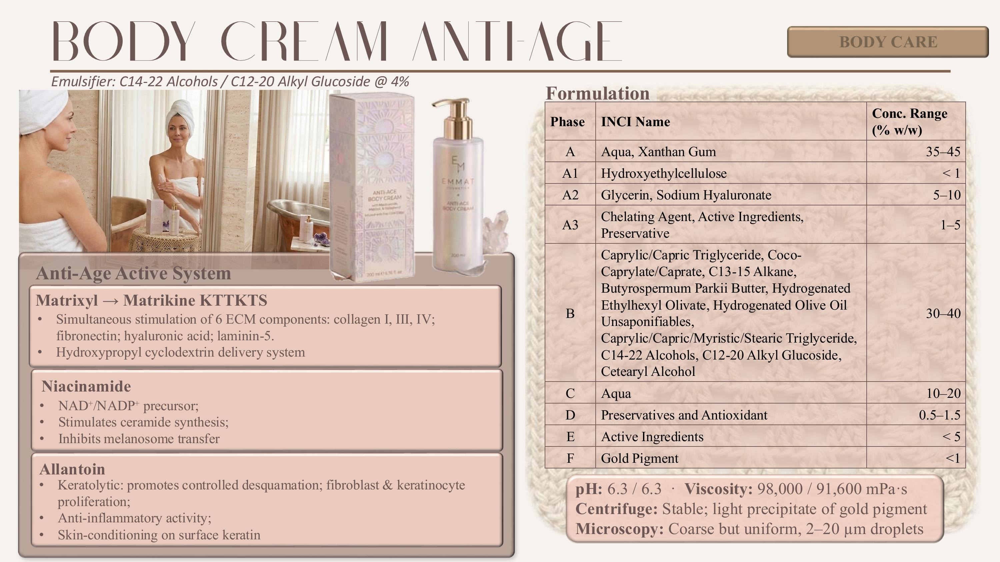

A lightweight, lotion-like leave-on positioned between a conventional aqueous toner and a fluid emulsion — hydration and stratum-corneum barrier support immediately after cleansing.

The Milky Toner is a low-viscosity, lotion-like leave-on delivered from a 150 ml glass bottle fitted with an orifice-reducer cap. It sits between a conventional aqueous toner and a fluid emulsion — a K-beauty format applied to damp skin immediately after cleansing, when the barrier is transiently at its most permeable and therefore at its most receptive to soothing, barrier-reinforcing and microbiome-supportive actives. The orifice-reducer cap was chosen deliberately: it restricts both flow rate and droplet size at the point of dispensing, limiting product wastage and air ingress into the bottle — a relevant precaution for a low-viscosity, more delicate colloidal system — while the slow, controlled pour reinforces a ritualistic gesture at the point of use.
It exists in the thesis to validate the modified-starch emulsifier (Sodium Starch Octenylsuccinate) at the format where its Pickering-particle stabilisation mechanism and its distinctive sensory identity are advantages rather than limitations. Series 3A showed four of five single-oil emulsions achieved perfect centrifuge stability without added stabilisers; Series 4 confirmed that very high viscosities are attainable even at low oil fractions — precisely the profile a hybrid toner-emulsion at ~8 % oil needs to hold. Sensory returned the fastest absorption rate (6.5) and the lowest residual amount (3.6) of the three systems, with a distinctive powdery after-feel that reads as clean, cared-for skin — exactly the K-beauty milky-toner sensory grammar.
| Phase | INCI name | w/w % |
|---|---|---|
| A | Aqua | q.s. to 100 |
| A | Xanthan Gum Crosspolymer-2 | < 0.5 |
| A1 | Glycerin | 2 – 5 |
| A1 | Butylene Glycol | 2 – 5 |
| A1 | Sodium Hyaluronate | < 1 |
| A2 | Sodium Starch Octenylsuccinate | 2 – 5 |
| A3 | Sodium Phytate | < 0.5 |
| A3 | Chlorphenesin | < 0.5 |
| B | Coco-Caprylate/Caprate | 2 – 5 |
| B | C13-15 Alkane | 2 – 5 |
| C | Aqua (carrier) | q.s. |
| C | Madecassoside, Asiaticoside, Centella Asiatica Leaf Extract | < 1 |
| C | Maltodextrin, Lactobacillus Ferment, Aqua | < 1 |
| D | Phenoxyethanol, Ethylhexylglycerin | 0.5 – 2 |
| E | Ceramide NP, Ceramide AP, Ceramide EOP, Phytosphingosine, Cholesterol, Behenic Acid, Polyglyceryl-10 Stearate, Polyglyceryl-6 Behenate, Glycerin, Cetearyl Alcohol, Glyceryl Stearate, Sodium Cetearyl Sulfate, Triethyl Citrate, Sodium Levulinate, Potassium Sorbate, Citric Acid, Aqua | < 1 |
| F | Lecithin, Tocopherol, Ascorbyl Palmitate, Citric Acid | < 1 |
| G | Parfum | < 0.5 |
| H | Lactic Acid, Aqua | q.s. |
Emulsification temperature of 65 °C selected as the optimal processing condition — sufficient for efficient emulsification while maintaining good physical stability and a homogeneous milky appearance throughout storage.
The milky-toner category increasingly combines soothing, barrier-reinforcing and microbiome-supportive functions in a single leave-on product applied to skin immediately after cleansing — the moment at which the barrier is transiently at its most permeable, and cleansing agents have partially disrupted the microbiome equilibrium.
The sodium salt of hyaluronic acid — a linear glycosaminoglycan of alternating N-acetyl-D-glucosamine and D-glucuronic acid disaccharide units. At 0.1–0.5 % and the cosmetic-grade molecular-weight range (800 kDa – 1.2 MDa), the polymer remains largely at the stratum-corneum surface where it forms a viscoelastic hydration reservoir, reduces TEWL through a physical hygroscopic mechanism, and reinforces the natural moisturising factor pool. The synergistic humectant system built here — sodium hyaluronate for sustained surface hydration, glycerin for immediate water binding and rapid stratum-corneum uptake, butylene glycol as secondary humectant and penetration enhancer for the co-formulated actives — avoids the tackiness of high-concentration single-humectant formulations.
The Centella asiatica extract is standardised to its principal bioactive triterpenoid saponins: madecassoside (the glycoside of madecassic acid) and asiaticoside (the glycoside of asiatic acid). These pentacyclic triterpenoid glycosides have been studied extensively for wound healing, fibroblast activation and epidermal barrier recovery. Their primary soothing mechanism is inhibition of NF-κB nuclear translocation and consequent suppression of pro-inflammatory cytokine cascades; in parallel, asiaticoside has been shown to stimulate type I collagen synthesis in dermal fibroblasts, supporting recovery of the dermal extracellular matrix following repetitive mild irritation. In this formulation, the extract targets post-cleansing reactive skin, consistent with the widespread use of Centella asiatica triterpenoids in formulations for sensitive and compromised barriers.
An application of controlled fermentation biotechnology to cosmetic ingredient production: maltodextrin serves as carbon source for a Lactobacillus-species fermentation, yielding a complex mixture of short-chain lactic-acid oligomers, postbiotic metabolites and low-molecular-weight peptides generated by proteolytic activity during fermentation. Two complementary purposes: (i) the low-molecular-weight fraction — free amino acids and di/tripeptides — is more readily absorbed by the epidermis than corresponding non-fermented macromolecular precursors; (ii) the postbiotic fraction — cell-wall fragments, exopolysaccharides and short-chain fatty acids — has been reported to interact favourably with the resident skin microbiome, selectively supporting commensal bacteria (principally Staphylococcus epidermidis) while limiting the adhesion of pathogenic species. This microbiome-restorative function is mechanistically distinct from, and additive to, the anti-inflammatory action of Centella asiatica.
The most mechanistically sophisticated component of the actives system. Ceramides constitute approximately 50 % by weight of the intercellular lipids of the stratum corneum — essential structural components of the lamellar bilayer arrays that confer its selective barrier function. Three ceramide subspecies are used here: ceramide NP (N-stearoyl phytosphingosine — phytosphingosine base + stearic acid), ceramide AP (α-hydroxy fatty acid ceramide, phytosphingosine backbone), and ceramide EOP (esterified ω-hydroxy ceramide — the "linker ceramide" responsible for covalent binding to cornified envelope proteins). Barrier integrity is associated not with a single species in isolation but with a balanced molar ratio of ceramide, cholesterol and free fatty acids forming a liquid-ordered lamellar phase — which is why cholesterol and behenic acid are co-formulated. Ceramide EOP is particularly noteworthy: its depletion is pathognomonic of the barrier disruption observed in atopic dermatitis and transient post-cleansing barrier compromise. The co-formulated phytosphingosine additionally functions as a precursor for de novo ceramide biosynthesis via the serine-palmitoyl-transferase pathway — a biosynthetic substrate for endogenous replenishment as well as a direct structural contribution.
| Parameter | Result |
|---|---|
| pH (t0 / t24h) | 6.2 / 6.2 Stable and slightly acidic — appropriate for a post-cleansing leave-on applied to a transiently permeable barrier. No drift over 24 h. |
| Viscosity at 2.5 rpm (t0 / t24h) | 9,056 / 9,600 mPa·s Low-viscosity target hit precisely — high enough at low oil fraction to hold a milky appearance and support the slow-pour orifice-reducer gesture, low enough to layer thinly under the rest of the routine. |
| Centrifugation test | Slight phase separation observed Consistent with the known behaviour of Sodium Starch Octenylsuccinate at reduced (2.5 %) concentration and judged acceptable for a low-viscosity leave-on toner format where a light shake before use is a normal K-beauty gesture. |
| Optical microscopy | Fine, 2–10 µm; localised oil-rich patches Fine droplet population confirming the intended microstructure; the localised oil-rich patches match the centrifuge observation and again are within the acceptance window for a leave-on hybrid toner at reduced emulsifier loading. |
The modified-starch system returned the fastest absorption rate of the three (6.5) and the lowest residual amount (3.6), with the distinctive powdery after-feel that is characteristic of starch-based Pickering emulsions on skin — a signature the panel read as clean, cared-for and unfinished with residue rather than merely bare. That sensory identity is the exact match for the K-beauty milky-toner ritual: a lotion-like leave-on that is meant to disappear quickly, leaving the skin ready to receive the next thin-layer product. The panel noted rapid interfacial-film breakdown on contact — the sensory expression of the Pickering mechanism — and a light, hydrated finish with no tackiness from the humectant system, confirming that the sodium-hyaluronate / glycerin / butylene-glycol balance had been correctly set.
The modified starch's fastest absorption rate (6.5), lowest residual amount (3.6) and distinctive powdery after-feel matched the K-beauty milky-toner brief precisely — none of the other two systems returned a sensory profile that would have read as an authentic milky toner. Its capacity to reach high viscosities at low oil fractions, documented in Series 4, allowed the ~8 % oil phase needed for a hybrid toner-emulsion to hold shape without over-thickening — an outcome the APG platform could not deliver at low oil load and the ester blend delivered only with additional co-stabiliser support. The known pigment-migration limitation of the starch platform was irrelevant here, since the toner carries no pigment. The slight phase separation observed under centrifugation at the 2.5 % emulsifier loading was judged acceptable for a low-viscosity leave-on format, consistent with the emulsifier's documented behaviour at reduced concentration, and mitigated in practice by the orifice-reducer cap that limits air ingress into the bottle over the product's use life. The 65 °C emulsification temperature was retained as the optimal balance between processing efficiency and homogeneous milky appearance across storage.
The Milky Toner answers the K-beauty ritual of multi-step, thin-layer hydration — a hybrid toner-emulsion applied to the transiently permeable post-cleansing barrier. Ceramide bilayer reconstitution, postbiotic microbiome support and Centella soothing are combined in a single lightweight, fast-absorbing vehicle, finished with a slow-pour orifice-reducer cap for a ritualistic gesture at the point of use. The format itself — milky, low-viscosity, layered on damp skin — is a direct import of the Korean toner category into a Western clean-beauty formulation frame, sitting inside the pastel iridescent glass and embossed granny-square motif shared across the EMMAT × Cassiopea line.
Aqua, Coco-Caprylate/Caprate, C13-15 Alkane, Glycerin, Butylene Glycol, Sodium Starch Octenylsuccinate, Xanthan Gum Crosspolymer-2, Phenoxyethanol, Ethylhexylglycerin, Ceramide NP, Ceramide AP, Ceramide EOP, Phytosphingosine, Cholesterol, Behenic Acid, Polyglyceryl-10 Stearate, Polyglyceryl-6 Behenate, Cetearyl Alcohol, Glyceryl Stearate, Sodium Cetearyl Sulfate, Triethyl Citrate, Sodium Levulinate, Potassium Sorbate, Citric Acid, Sodium Hyaluronate, Madecassoside, Asiaticoside, Centella Asiatica Leaf Extract, Lactobacillus Ferment, Maltodextrin, Lecithin, Tocopherol, Ascorbyl Palmitate, Sodium Phytate, Chlorphenesin, Parfum, Lactic Acid.